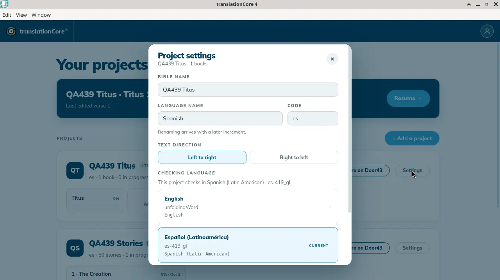
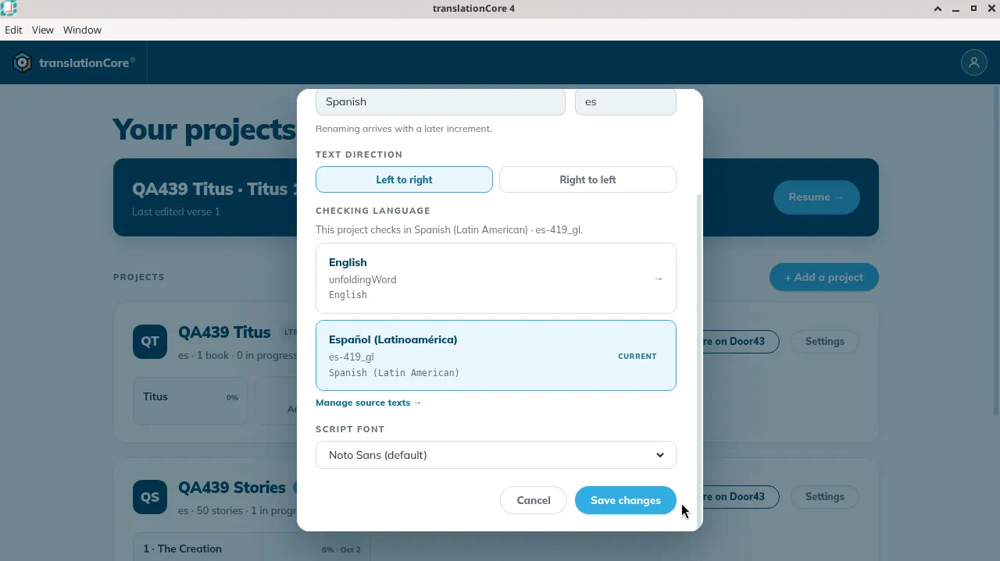
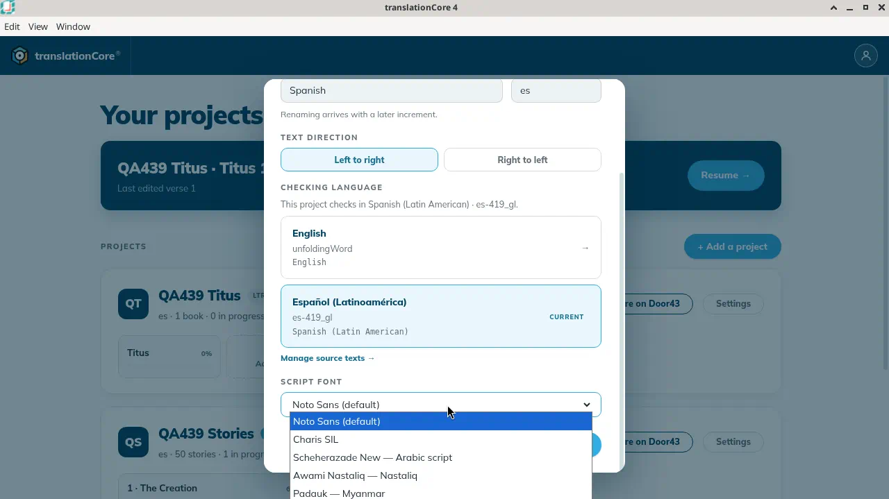
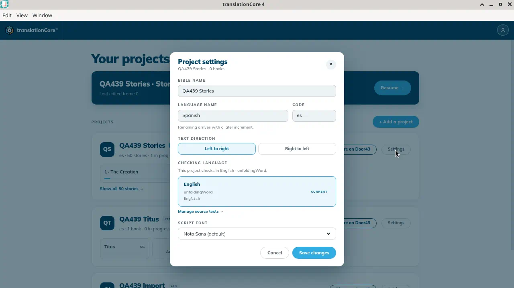
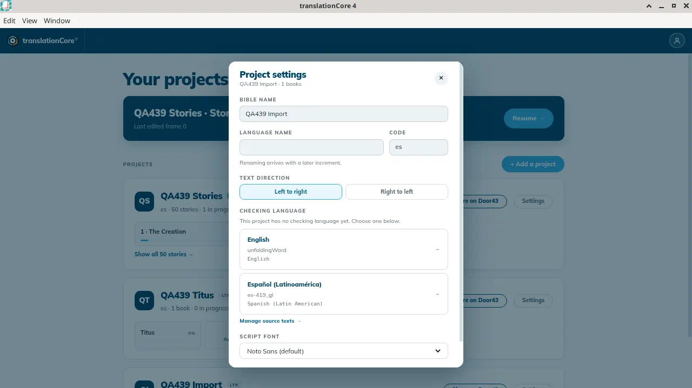
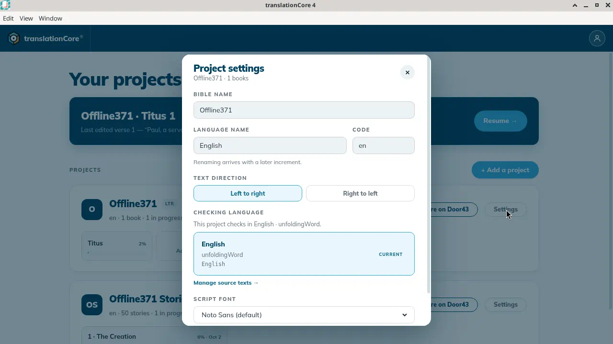
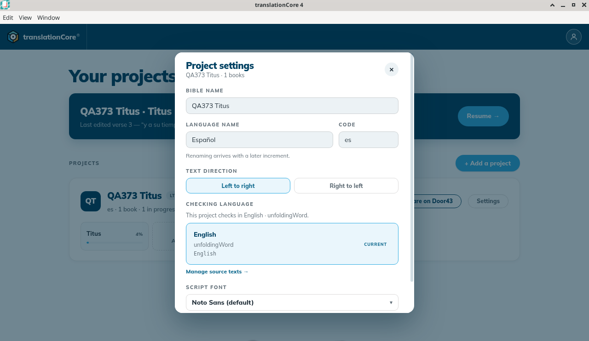

Project settings
Open a project's settings from the Settings button on its Home card. Change the text direction, the script font, or the checking language, or manage its source texts. The name and language are shown but cannot be changed yet.
Where in the app: Home › project card › Settings › Project settings
What it is
Each project has settings for how its text is written and shown, and for which gateway language it checks against.
Open them from the project's card on Home: click Settings on the right of the card. There is no settings button in the top bar: to change a setting while you work, go back to Home (click the project name at the top left), then click Settings on the card.
The dialog's title is Project settings, with the project name and its number of books under it (for example "QA373 Titus · 1 books").
| Setting | Can change? |
|---|---|
| Bible name | Not yet |
| Language name, Code | Not yet |
| Text direction (Left to right / Right to left) | Yes |
| Checking language | Yes. Choose an installed language in this dialog. See Change the checking language. |
| Manage source texts → | Opens the source-text dialog for this project |
| Script font | Yes. The closed control shows Noto Sans (default). The list is Noto Sans (default), Charis SIL, Scheherazade New — Arabic script, Awami Nastaliq — Nastaliq, and Padauk — Myanmar. No other font was chosen, and Save changes was not clicked. |
When to use it
When the script direction is wrong, another font suits your script better, or the project should check in another gateway language.
Step by step
- On Home, find the project card and click Settings (next to Share on Door43).
- Read Bible name, Language name and Code. They are greyed out, with the note "Renaming arrives with a later increment."
- Change the Text direction or the Script font if you need to, then click Save changes.
- Under Checking language, choose a language or click Manage source texts →. Choosing another language is covered in Change the checking language.
- To close without saving, click the round ✕ at the top right or press Esc.
What you should see
- Project settings opens from the Home card Settings button. There is no Project settings button in the top bar, on Home or inside Understand, Translate or Check.
- The dialog shows Bible name, Language name, Code, the note "Renaming arrives with a later increment.", Text direction, Checking language, Manage source texts →, and Script font.
- The sentence is "This project checks in Spanish (Latin American) · es-419_gl." Español (Latinoamérica), es-419_gl, is marked Current. English, unfoldingWord, is the other row.
Screenshots

img/st-project-settings-1.png
img/st-project-settings-2.png
img/st-project-settings-3.png
img/st-project-settings-4.png
img/st-project-settings-5.png
img/st-project-settings-6.png
img/st-project-settings-7.pngTips
- What changed in Increment 8: the Project settings button used to be in the top bar inside a project. It moved to the Settings button on each Home card (issue #505).
- A new Bible such as QA373 Titus (Español, es) checks in English: "This project checks in English · unfoldingWord.", with English marked Current.
- On QA439 Titus the subtitle read "QA439 Titus · 1 books". On QA439 Stories it read "QA439 Stories · 0 books". The stories dialog still labels the name field Bible name.
- Before Spanish notes were installed, the only checking-language row was English, with unfoldingWord under it, and the sentence "This project checks in English · unfoldingWord."
- QA439 Import says "QA439 Import · 1 books". The language name is blank, the code is es, and the sentence is "This project has no checking language yet. Choose one below." English and Español (Latinoamérica) are both listed, and neither is marked Current. Nothing was chosen.
- QA439 Stories had no Spanish row. The sentence was "This project checks in English · unfoldingWord." That matches the English notes on story 1.
- Offline371, an English Bible, says the same sentence: "This project checks in English · unfoldingWord." The English row is marked Current. The subtitle is "Offline371 · 1 books". Language name English and code en are greyed out. Nothing was saved.
- After translation notes were downloaded, a second row appeared: Español (Latinoamérica), es-419_gl, Spanish (Latin American), marked Current. The sentence was "This project checks in Spanish (Latin American) · es-419_gl."
- Pick the font that shows your script's letters correctly. The list on QA439 Titus was Noto Sans (default), Charis SIL, Scheherazade New — Arabic script, Awami Nastaliq — Nastaliq, and Padauk — Myanmar. Scheherazade New and Awami Nastaliq are labeled for Arabic script; Padauk is labeled for Myanmar script.
Known limits
- Renaming the project or changing its language is not built yet.
- The subtitle counts "books" even for one book, and even for a stories project. QA439 Titus, QA439 Import, and Offline371 each said "1 books". QA439 Stories said "0 books".
Related topics
For testers and developers
Code: src/views/modals/ProjectSettings.jsx, src/views/scriptStyle.js
Journeys: J2